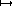
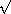

1.3 Formulating Abstractions with Higher-Order Procedures
1.3 高階手続きを使って抽象概念を定式化する
We have seen that procedures are, in effect, abstractions that describe compound operations on numbers independent of the particular numbers. For example, when we
私たちは、手続きが、事実上は、特定の数とは無関係の、数についての複合的演算を記述する抽象化手段である、ということを見てきた。 たとえば、私たちが以下のように書くとき、
we are not talking about the cube of a particular number, but rather about a method for obtaining the cube of any number. Of course we could get along without ever defining this procedure, by always writing expressions such as
私たちは、特定の数の3乗について述べているのではなく、むしろ、任意の数の3乗を得る方法について述べている。 もちろん、この手続きをまったく定義せずにうまくやることも可能だろう——以下のような式を常に書くことによって。
(* 3 3 3) (* x x x) (* y y y)
and never mentioning cube explicitly. This would place us at a serious disadvantage, forcing us to work always at the level of the particular operations that happen to be primitives in the language (multiplication, in this case) rather than in terms of higher-level operations. Our programs would be able to compute cubes, but our language would lack the ability to express the concept of cubing. One of the things we should demand from a powerful programming language is the ability to build abstractions by assigning names to common patterns and then to work in terms of the abstractions directly. Procedures provide this ability. This is why all but the most primitive programming languages include mechanisms for defining procedures.
そしてまた、明示的には cube にまったく言及しないことによって。 だが、このやり方によって、私たちは、きわめて不利な立場に追いやられるだろう。というのも、このやり方によって、私たちは、より高いレベルの演算を用いて作業する、というよりもむしろ、たまたま言語のプリミティプであるような特定の演算 (この事例では乗算) のレベルで常に作業するように、強いられるからだ。 私たちのプログラムは3乗を計算できるだろうが、私たちの言語は、3乗するという概念を表現する能力を欠いてしまうだろう。 強力なプログラミング言語に対して私たちが求めるべき事柄の一つは、共通のパタンに名前を割り当てることで抽象概念を組み立て、その抽象概念を直接的に使って作業するための能力である。 手続きはこの能力を与えてくれる。 これが、もっとも原始的なものを除くすべてのプログラミング言語が、手続きを定義するための仕組みを有する理由なのである。
Yet even in numerical processing we will be severely limited in our ability to create abstractions if we are restricted to procedures whose parameters must be numbers. Often the same programming pattern will be used with a number of different procedures. To express such patterns as concepts, we will need to construct procedures that can accept procedures as arguments or return procedures as values. Procedures that manipulate procedures are called higher-order procedures. This section shows how higher-order procedures can serve as powerful abstraction mechanisms, vastly increasing the expressive power of our language.
数値的な処理においてさえも、もし、仮引数が数でなければならないような手続きのみに限定されていたら、私たちは、抽象概念を創造する能力において著しく制限されてしまうだろう。 しばしば、同じプログラミング・パタンが、多くの異なる手続きと一緒に使われることだろう。 そういうパタンを概念として表現するためには、手続きを実引数として受け入れられるか、あるいは、手続きを値として返せるような手続きを、構築する必要があるだろう。 手続きを操作する手続きは、高階手続きと呼ばれる。 本節では、高階手続き——言語の表現力を大いに高めてくれる——が、強力な抽象化の仕組みとしていかに役立つことができるのか、ということを示す。
1.3.1 Procedures as Arguments
1.3.1 実引数としての手続き
Consider the following three procedures. The first computes the sum of the integers from a through b:
以下の三つの手続きを考えよう。 一番目の手続きは、a から b までの整数の和を計算する。
(define (sum-integers a b) (if (> a b) 0 (+ a (sum-integers (+ a 1) b))))
The second computes the sum of the cubes of the integers in the given range:
二番目の手続きは、与えられた範囲の整数の3乗の和を計算する。
(define (sum-cubes a b) (if (> a b) 0 (+ (cube a) (sum-cubes (+ a 1) b))))
The third computes the sum of a sequence of terms in the series
三番目の手続きは、次のような級数における一連の項の和を計算する。
which converges to  /8 (very slowly):49
/8 (very slowly):49
なお、これは、(とてもゆっくりと) π/8 に収束する49。
(define (pi-sum a b) (if (> a b) 0 (+ (/ 1.0 (* a (+ a 2))) (pi-sum (+ a 4) b))))
These three procedures clearly share a common underlying pattern. They are for the most part identical, differing only in the name of the procedure, the function of a used to compute the term to be added, and the function that provides the next value of a. We could generate each of the procedures by filling in slots in the same template:
これら三つの手続きは、明らかに、根底にある共通のパタンを共有している。 これら三つの手続きは、ほとんどの部分において同一であり、ただ、手続き名と、足すべき項を計算するのに使われる a の関数と、a の次の値を与える関数だけが、異なっている。 私たちは、同じテンプレート内の欄を埋めることによって、これらの手続きの各々を作り出せるだろう。
(define (<name> a b) (if (> a b) 0 (+ (<term> a) (<name> (<next> a) b))))
The presence of such a common pattern is strong evidence that there is a useful abstraction waiting to be brought to the surface. Indeed, mathematicians long ago identified the abstraction of summation of a series and invented ``sigma notation,'' for example
このような共通パタンの存在は、表面化するのを待っている有用な抽象概念がある、ということの強力な証拠である。
実際、数学者たちは、ずっと前に、級数の和という抽象概念を特定し、「シグマ記法」を発明した——これは、たとえば以下のようなものであり、

to express this concept. The power of sigma notation is that it allows mathematicians to deal with the concept of summation itself rather than only with particular sums -- for example, to formulate general results about sums that are independent of the particular series being summed.
級数の和というこの抽象概念を表現するためのものである。 シグマ記法の威力は、シグマ記法によって、数学者たちが、特定の総和だけを扱うというよりむしろ、総和をとるという概念自体を扱えるようになる——たとえば、足される特定の級数とは独立な、総和についての一般的成果を定式化できるようになる——という点にある。
Similarly, as program designers, we would like our language to be powerful enough so that we can write a procedure that expresses the concept of summation itself rather than only procedures that compute particular sums. We can do so readily in our procedural language by taking the common template shown above and transforming the ``slots'' into formal parameters:
同様に、プログラム設計者として私たちは、特定の総和を計算する手続きだけを書けるというよりむしろ、総和をとるという概念自体を表現する手続きを書けるように、私たちの言語には十分に強力であってほしい。 私たちは、私たちの手続き的言語で、難なくそういったことができる——上記の共通テンプレートを受け入れて、「欄」を形式に則った仮引数に変形することによって。
(define (sum term a next b) (if (> a b) 0 (+ (term a) (sum term (next a) next b))))
Notice that sum takes as its arguments the lower and upper bounds a and b together with the procedures term and next. We can use sum just as we would any procedure. For example, we can use it (along with a procedure inc that increments its argument by 1) to define sum-cubes:
sum が、下限と上限にあたる a と b を、term と next という手続きとともに、実引数としてとることに注意してほしい。 私たちが任意の手続きを使うであろう方法とまさに同じように、私たちは、sum を使うことができる。 たとえば、私たちは、sum を (実引数を1だけ増やす、inc という手続きとともに) 使って sum-cubes を定義することができる。
(define (inc n) (+ n 1)) (define (sum-cubes a b) (sum cube a inc b))
Using this, we can compute the sum of the cubes of the integers from 1 to 10:
これを使うと、私たちは、1から10までの整数の3乗の和を計算できる。
(sum-cubes 1 10) 3025
With the aid of an identity procedure to compute the term, we can define sum-integers in terms of sum:
項を計算するための恒等手続きの助けを借りると、私たちは、sum を使って sum-integers を定義することができる。
(define (identity x) x) (define (sum-integers a b) (sum identity a inc b))
Then we can add up the integers from 1 to 10:
すると、私たちは、1から10までの整数を足し合わせることができる。
(sum-integers 1 10) 55
We can also define pi-sum in the same way:50
同じ方法で、私たちは pi-sum も定義できる50。
(define (pi-sum a b) (define (pi-term x) (/ 1.0 (* x (+ x 2)))) (define (pi-next x) (+ x 4)) (sum pi-term a pi-next b))
Using these procedures, we can compute an approximation to
:
これらの手続きを使うと、私たちは、πの近似値を計算できる。
(* 8 (pi-sum 1 1000)) 3.139592655589783
Once we have sum, we can use it as a building block in formulating further concepts. For instance, the definite integral of a function f between the limits a and b can be approximated numerically using the formula
一旦 sum が使えるようになると、私たちは、更なる概念を定式化する際に、sum を基本的構成要素として使える。 たとえば、a と b という両端の間での、f という関数の定積分は、以下の公式を使って、数値的に近似できる。
for small values of dx. We can express this directly as a procedure:
ただし、dx の小さな値に対して。 私たちは、これを手続きとして直接的に表現できる。
(define (integral f a b dx) (define (add-dx x) (+ x dx)) (* (sum f (+ a (/ dx 2.0)) add-dx b) dx)) (integral cube 0 1 0.01) .24998750000000042 (integral cube 0 1 0.001) .249999875000001
(The exact value of the integral of cube between 0 and 1 is 1/4.)
(0から1までの cube の積分の正確な値は、1/4である。)
Exercise 1.29. Simpson's Rule is a more accurate method of numerical integration than the method illustrated above. Using Simpson's Rule, the integral of a function f between a and b is approximated as
練習問題1.29. シンプソンの公式は、上記の方法よりも正確な数値積分の方法である。 シンプソンの公式を使うと、f という関数の a から b までの積分は、次のように近似される。

where h = (b - a)/n, for some even integer n, and yk = f(a + kh). (Increasing n increases the accuracy of the approximation.) Define a procedure that takes as arguments f, a, b, and n and returns the value of the integral, computed using Simpson's Rule. Use your procedure to integrate cube between 0 and 1 (with n = 100 and n = 1000), and compare the results to those of the integral procedure shown above.
ただしここで、ある偶数の整数 n に対して、 h = (b − a)/n であり、かつ、 yk = f(a + kh) である。 (n の増大により、近似の精度が高まる。) f と a と b と n を引数としてとり、積分値——シンプソンの公式を使って計算されたもの——を返すような、手続きを定義せよ。 君の手続きを使って、(n = 100 とした場合と、n = 1000 とした場合で) 0から1まで cube を積分し、その結果を、上記の integral という手続きを使ったときの結果と比べよ。
Exercise 1.30. The sum procedure above generates a linear recursion. The procedure can be rewritten so that the sum is performed iteratively. Show how to do this by filling in the missing expressions in the following definition:
練習問題1.30. 上記の sum という手続きは、線形再帰を作り出す。 この手続きは、合計が反復的になされるように、書き換えることができる。 以下の定義中の欠けている式を埋めることによって、この書き換えの方法を示せ。
(define (sum term a next b) (define (iter a result) (if <??> <??> (iter <??> <??>))) (iter <??> <??>))
; こうかな? (define (sum term a next b) (define (iter a result) (if (> a b) result (iter (next a) (+ (term a) result)))) (iter a 0))
Exercise 1.31.
a. The sum procedure is only the simplest of a vast number of
similar abstractions that can be captured as higher-order procedures.51 Write an analogous procedure
called product that returns the product of the values of a
function at points over a given range.
Show how to define factorial in terms of
product. Also use product to compute approximations to
using the formula52
練習問題1.31. a. sum の手続きは、高階手続きとして表現され得る莫大な数の類似の抽象化のうちで、もっとも単純なものにすぎない51。 与えられた範囲にわたる各点における、関数の値の積を返すような、product と呼ばれる類似の手続きを書け。 product を使って factorial を定義する方法を示せ。 また、以下の公式を用いて π の近似値を計算するために、product を使ってみよ52。
; sumをproductに、0を1に変えただけ。 (define (product term a next b) (if (> a b) 1 (* (term a) (product term (next a) next b)))) ; incとidentityも再掲 (define (inc x) (+ x 1)) (define (identity x) x) (define (factorial n) (product identity 1 inc n)) ; 上記公式の第 2j−1 項と第 2j 項 (j=1, 2, …) は、それぞれ、2j/(2j+1) と 2(j+1)/(2j+1) である。 ; この2項を組にする。 (define (twin j) (* (/ (* 2 j) (+ (* 2 j) 1)) (/ (* 2 (+ j 1)) (+ (* 2 j) 1)))) ; 上記公式の第 2n 項までを使った近似値を求める。 (define (get-pi n) (* 4 (product twin 1 inc n))) ; ちょっと試してみる。 gosh> (get-pi 1) 32/9 gosh> (get-pi 10) 274877906944/85530896451 gosh> (define pi (acos -1)) pi gosh> pi 3.141592653589793 gosh> (- pi (get-pi 1)) -0.41396290196576224 gosh> (- pi (get-pi 10)) -0.07219228670339639 gosh> (- pi (get-pi 100)) -0.00778581957880764
b. If your product procedure generates a recursive process, write one that generates an iterative process. If it generates an iterative process, write one that generates a recursive process.
b. もし君の書いた product が再帰的なプロセスを作り出すなら、反復的なプロセスを作り出すようなものを書け。 もし君の書いた product が反復的なプロセスを作り出すなら、再帰的なプロセスを作り出すようなものを書け。
; 練習問題1.30に倣って反復版を書く。 (define (product term a next b) (define (iter a result) (if (> a b) result (iter (next a) (* (term a) result)))) (iter a 1))
Exercise 1.32. a. Show that sum and product (exercise 1.31) are both special cases of a still more general notion called accumulate that combines a collection of terms, using some general accumulation function:
練習問題1.32. a. sum と product (練習問題1.31) が、どちらも、ある種の一般的な累積関数を使って項の集まりを合成するような、さらにずっと一般的な、accumulate と呼ばれる概念の、特殊な場合であることを示せ。
(accumulate combiner null-value term a next b)
Accumulate takes as arguments the same term and range specifications as sum and product, together with a combiner procedure (of two arguments) that specifies how the current term is to be combined with the accumulation of the preceding terms and a null-value that specifies what base value to use when the terms run out. Write accumulate and show how sum and product can both be defined as simple calls to accumulate.
accumulate は、sum および product と同じく、項と範囲の指定を引数としてとるとともに、先行する項の累積に現在の項をどのように結合すべきかを指定する、(2引数の) combiner という手続きと、項が尽きたときにどういう基底値を使うべきかを指定する、null-value を、引数としてとる。 accumulate を書け。そして、sum および product の双方が、どうやったら accumulate の単純な呼び出しとして定義され得るのか、ということを示せ。
; こうかな? (define (accumulate combiner null-value term a next b) (if (> a b) null-value (combiner (term a) (accumulate combiner null-value term (next a) next b)))) (define (sum term a next b) (accumulate + 0 term a next b)) (define (product term a next b) (accumulate * 1 term a next b))
b. If your accumulate procedure generates a recursive process, write one that generates an iterative process. If it generates an iterative process, write one that generates a recursive process.
b. もし君の書いた accumulate の手続きが再帰的なプロセスを作り出すなら、反復的なプロセスを作り出すようなものを書け。 もし君の書いた accumulate の手続きが反復的なプロセスを作り出すなら、再帰的なプロセスを作り出すようなものを書け。
; こうかな? (define (accumulate combiner null-value term a next b) (define (iter a result) (if (> a b) result (iter (next a) (combiner (term a) result)))) (iter a null-value))
Exercise 1.33. You can obtain an even more general version of accumulate (exercise 1.32) by introducing the notion of a filter on the terms to be combined. That is, combine only those terms derived from values in the range that satisfy a specified condition. The resulting filtered-accumulate abstraction takes the same arguments as accumulate, together with an additional predicate of one argument that specifies the filter. Write filtered-accumulate as a procedure. Show how to express the following using filtered-accumulate:
練習問題1.33 結合されるべき項に対するフィルタという概念を導入することにより、君は、accumulate (練習問題1.32) の、より一般的なバージョンさえも、得ることができる。 つまり、指定された条件を満たすような当該範囲内の値から導出される項のみを、結合せよ。 その結果としてできる filtered-accumulate という抽象概念は、accumulate と同じ引数をとり、さらに、フィルタを指定するような、1引数の追加の述語も、引数としてとる。 filtered-accumulate を手続きとして書け。 filtered-accumulate を使って以下のことを表現する方法を示せ。
; こうかな? (define (filtered-accumulate combiner null-value term a next b filter?) (if (> a b) null-value (if (filter? a) (combiner (term a) (filtered-accumulate combiner null-value term (next a) next b filter?)) (filtered-accumulate combiner null-value term (next a) next b filter?))))
a. the sum of the squares of the prime numbers in the interval a to b (assuming that you have a prime? predicate already written)
a. a から b までの範囲内の素数の2乗の和 (なお、君は prime? という述語を既に書いているものとする)。
; 1.2節より再掲 (define (smallest-divisor n) (find-divisor n 2)) (define (find-divisor n test-divisor) (cond ((> (square test-divisor) n) n) ((divides? test-divisor n) test-divisor) (else (find-divisor n (+ test-divisor 1))))) (define (divides? a b) (= (remainder b a) 0)) ; 1.2節では以下のとおり定義していた。 ; (define (prime? n) (= n (smallest-divisor n))) ; が、ちょっと変える。 (define (prime? n) (and (> n 1) (= n (smallest-divisor n)))) ; incを再掲。squareも定義する。 (define (inc x) (+ x 1)) (define (square x) (* x x)) ; さて本題 (define (sum-of-squared-primes a b) (filtered-accumulate + 0 square a inc b prime?)) ; 実行例 gosh> (sum-of-squared-primes 1 10) 87 gosh> (+ 4 9 25 49) 87
b. the product of all the positive integers less than n that are relatively prime to n (i.e., all positive integers i < n such that GCD(i,n) = 1).
b. n とは互いに素な、n 未満のすべての正整数 (つまり、 GCD(i, n) = 1 であるような、 i < n なるすべての正整数 i) の積
1.3.2 Constructing Procedures Using Lambda
1.3.2 lambda を使って手続きを構築する
In using sum as in section 1.3.1, it seems terribly awkward to have to define trivial procedures such as pi-term and pi-next just so we can use them as arguments to our higher-order procedure. Rather than define pi-next and pi-term, it would be more convenient to have a way to directly specify ``the procedure that returns its input incremented by 4'' and ``the procedure that returns the reciprocal of its input times its input plus 2.'' We can do this by introducing the special form lambda, which creates procedures. Using lambda we can describe what we want as
1.3.1節のように sum を使う際、pi-term や pi-next などの瑣末な手続きを、高階手続きに渡す実引数として使えるようにするために、定義しなくてはならないのは、ひどく不便なように思える。 pi-term や pi-next を定義するよりむしろ、「入力を4だけ増やしたものを返す手続き」や「入力に2を足したものを入力に掛けたものの逆数を返す手続き」と直接的に指定するための方法がある方が、より便利であろう。 lambda という特殊形式——これは、手続きを作成する——を導入することで、こういうことが行えるようになる。 私たちは以下のようにして、lambda を使って、望みのものを記述することができる。
(lambda (x) (+ x 4))
and
および
(lambda (x) (/ 1.0 (* x (+ x 2))))
Then our pi-sum procedure can be expressed without defining any auxiliary procedures as
すると、pi-sum の手続きは、補助的手続きを何も定義することなく、以下のように表現できる。
(define (pi-sum a b) (sum (lambda (x) (/ 1.0 (* x (+ x 2)))) a (lambda (x) (+ x 4)) b))
Again using lambda, we can write the integral procedure without having to define the auxiliary procedure add-dx:
もう一度 lambda を使うと、add-dx という補助的手続きを定義する必要なしに、integral の手続きを書ける。
(define (integral f a b dx) (* (sum f (+ a (/ dx 2.0)) (lambda (x) (+ x dx)) b) dx))
In general, lambda is used to create procedures in the same way as define, except that no name is specified for the procedure:
一般的には、lambda は、手続きに名前が指定されないという点を除けば define と同じ方法で、手続きを作成するのに使われる。
(lambda (<formal-parameters>) <body>)
The resulting procedure is just as much a procedure as one that is created using define. The only difference is that it has not been associated with any name in the environment. In fact,
結果としてできる手続きは、define を使って作られた手続きとちょうど同様な手続きである。 唯一の違いは、環境中のどの名前とも、今まで関連づけられていない、という点である。 実際、
(define (plus4 x) (+ x 4))
is equivalent to
は、以下のものと等価だ。
(define plus4 (lambda (x) (+ x 4)))
We can read a lambda expression as follows:
私たちは、lambda 式を次のように読むことができる。
(lambda (x) (+ x 4))
 the procedure of an argument x that adds x and 4
the procedure of an argument x that adds x and 4
引数 x をとり、x と 4 を足す手続き
Like any expression that has a procedure as its value, a lambda expression can be used as the operator in a combination such as
自身の値として手続きを持つ任意の式と同様に、lambda 式は、たとえば以下のように、コンビネーション中の演算子として使うことができるし、
((lambda (x y z) (+ x y (square z))) 1 2 3) 12
or, more generally, in any context where we would normally use a procedure name.53
あるいは、より一般的には、普通は手続き名を使うであろう、という任意の文脈において、使うことができる53。
Using let to create local variables
let を使って局所変数を作成する
Another use of lambda is in creating local variables. We often need local variables in our procedures other than those that have been bound as formal parameters. For example, suppose we wish to compute the function
lambda のもう一つの使用法は、局所変数の作成における使用である。 私たちは、仮引数として既に束縛されたもの以外の局所変数も、しばしば手続きの中で必要とする。 たとえば、以下の関数を計算したいのだとしよう。
which we could also express as
これは、次のようにも表現できるだろう。
In writing a procedure to compute f, we would like to include as local variables not only x and y but also the names of intermediate quantities like a and b. One way to accomplish this is to use an auxiliary procedure to bind the local variables:
f を計算する手続きを書く際、私たちは、x と y だけでなく、a や b のような中間段階の量の名前も、局所変数として含めたい。 これを達成するための一つの方法は、局所変数を束縛するための補助的手続きを使うことである。
(define (f x y) (define (f-helper a b) (+ (* x (square a)) (* y b) (* a b))) (f-helper (+ 1 (* x y)) (- 1 y)))
Of course, we could use a lambda expression to specify an anonymous procedure for binding our local variables. The body of f then becomes a single call to that procedure:
もちろん、局所変数を束縛するための無名手続きとして、lambda 式を使うこともできるだろう。 すると、f の本体は、そのような手続きの呼び出しが一つあるだけ、となる。
(define (f x y) ((lambda (a b) (+ (* x (square a)) (* y b) (* a b))) (+ 1 (* x y)) (- 1 y)))
This construct is so useful that there is a special form called let to make its use more convenient. Using let, the f procedure could be written as
この構成はとても有用なので、その使用をより便利にするための、let と呼ばれる特殊形式が存在する。 let を使うと、f の手続きは、以下のように書けるだろう。
(define (f x y) (let ((a (+ 1 (* x y))) (b (- 1 y))) (+ (* x (square a)) (* y b) (* a b))))
The general form of a let expression is
let 式の一般的形式は次のとおりである。
(let ((<var1> <exp1>)
(<var2> <exp2>)
 (<varn> <expn>))
<body>)
(<varn> <expn>))
<body>)
which can be thought of as saying
これは、次のように言っているものと見なせる。
| let | <var1> have the value <exp1> and |
| <var2> have the value <exp2> and | |
| |
| <varn> have the value <expn> | |
| in | <body> |
本体 (<body>) において、
変数1 (<var1>) が 式1 (<exp1>) という値を持つものとし、
変数2 (<var2>) が 式2 (<exp2>) という値を持つものとし、
変数n (<varn>) が 式n (<expn>) という値を持つものとせよ。
The first part of the let expression is a list of name-expression pairs. When the let is evaluated, each name is associated with the value of the corresponding expression. The body of the let is evaluated with these names bound as local variables. The way this happens is that the let expression is interpreted as an alternate syntax for
let 式の最初の部分は、名前と式の対のリストである。 let が評価されるとき、それぞれの名前は、対応する式の値と関連づけられる。 let の本体は、局所変数として束縛されたこれらの名前を使って、評価される。 このようなことが起こる状況とは、let 式が以下のものの代替的構文として解釈されるときである。
((lambda (<var1> ...<varn>)
<body>)
<exp1>
<expn>)
No new mechanism is required in the interpreter in order to provide local variables. A let expression is simply syntactic sugar for the underlying lambda application.
局所変数を提供するために、インタプリタには、新たな仕組みは何も必要とされない。 let 式は、単に、裏に潜んだ lambda 適用の糖衣構文にすぎない。
We can see from this equivalence that the scope of a variable specified by a let expression is the body of the let. This implies that:
この等価性から、私たちは、let 式により指定された変数のスコープが、let の本体である、と理解できる。 このことは、以下のことを暗示する。
- Let allows one to bind variables as locally as possible to where they are to be used. For example, if the value of x is 5, the value of the expression
- let によって、変数が使われることになる場所にできるだけ局所的に、その変数を束縛できるようになる。 たとえば、もし x の値が5なら、以下の式の値は、
(+ (let ((x 3)) (+ x (* x 10))) x)
- is 38. Here, the x in the body of the let is 3, so the value of the let expression is 33. On the other hand, the x that is the second argument to the outermost + is still 5.
- 38である。 ここで、let の本体内での x は3なので、let 式の値は33である。 一方、一番外側の + の二つ目の実引数である x は、依然として5である。
- The variables' values are computed outside the let. This matters when the expressions that provide the values for the local variables depend upon variables having the same names as the local variables themselves. For example, if the value of x is 2, the expression
- 変数の値は、let の外側で計算される。 このことは、局所変数に値を与える式が、その局所変数自体と同じ名前を持つ変数に依存しているときに、重要である。 たとえば、もし x の値が2なら、以下の式は、
(let ((x 3) (y (+ x 2))) (* x y))
- will have the value 12 because, inside the body of the let, x will be 3 and y will be 4 (which is the outer x plus 2).
- 12になるだろう。というのも、let の本体内では、x は3となり、y は4 (外側の x に2を足したもの) となるだろうから。
Sometimes we can use internal definitions to get the same effect as with let. For example, we could have defined the procedure f above as
私たちは、ときには、let と同じ効果を得るために内部の定義を使うことができる。 たとえば、上記の f という手続きを、以下のように定義することもできただろう。
(define (f x y) (define a (+ 1 (* x y))) (define b (- 1 y)) (+ (* x (square a)) (* y b) (* a b)))
We prefer, however, to use let in situations like this and to use internal define only for internal procedures.54
しかし、私たちは、このような状況では let を使う方を好み、内部の define は内部の手続きにだけ使うことを好む54。
Exercise 1.34. Suppose we define the procedure
練習問題1.34. 以下の手続きを定義するものとしよう。
(define (f g) (g 2))
Then we have
すると、以下のようになる。
(f square) 4 (f (lambda (z) (* z (+ z 1)))) 6
What happens if we (perversely) ask the interpreter to evaluate the combination (f f)? Explain.
もし、(ひねくれて) インタプリタに対して、(f f) というコンビネーションを評価するように求めたら、何が起こるだろうか? 説明せよ。
; 定義にしたがって (f f) を展開すると、 ; (f 2) となり、これをまた定義にしたがって展開すると、 ; (2 2) となるのだが、オペレータたるべき第1要素は、ここでは 2 という数である。 ; 数はオペレータたりえない。ということでエラー。 ; 実際、実行してみると、ほれ、この通り。 gosh> (f f) *** ERROR: invalid application: (2 2)
1.3.3 Procedures as General Methods
1.3.3 一般的な方法としての手続き
We introduced compound procedures in section 1.1.4 as a mechanism for abstracting patterns of numerical operations so as to make them independent of the particular numbers involved. With higher-order procedures, such as the integral procedure of section 1.3.1, we began to see a more powerful kind of abstraction: procedures used to express general methods of computation, independent of the particular functions involved. In this section we discuss two more elaborate examples -- general methods for finding zeros and fixed points of functions -- and show how these methods can be expressed directly as procedures.
数値的演算のパタンがそれ自体に伴う特定の数とは独立となるように、その数値的演算のパタンを抽象化するための仕組みとして、1.1.4節で私たちは、複合的手続きを導入した。 1.3.1節の integral という手続きなどの高階手続きを使って、私たちは、より強力な種類の抽象化——計算の一般的方法を、それに伴う特定の関数とは独立して表現するために、使われる手続き——を理解し始めた。 本節では、さらに込み入った二つの例——関数の零点および不動点を見つけるための一般的方法——について議論し、どのようにしてこれらの方法を直接的に手続きとして表現できるのかを示す。
Finding roots of equations by the half-interval method
二分法により方程式の解を見つける
The half-interval method is a simple but powerful technique for finding roots of an equation f(x) = 0, where f is a continuous function. The idea is that, if we are given points a and b such that f(a) < 0 < f(b), then f must have at least one zero between a and b. To locate a zero, let x be the average of a and b and compute f(x). If f(x) > 0, then f must have a zero between a and x. If f(x) < 0, then f must have a zero between x and b. Continuing in this way, we can identify smaller and smaller intervals on which f must have a zero. When we reach a point where the interval is small enough, the process stops. Since the interval of uncertainty is reduced by half at each step of the process, the number of steps required grows as (log( L/T)), where L is the length of the original interval and T is the error tolerance (that is, the size of the interval we will consider ``small enough''). Here is a procedure that implements this strategy:
二分法は、 f(x) = 0 という方程式の根を見つけるための、単純だが強力な技法である——ただしここで、f は連続関数である。 考え方はこうだ——もし、 f(a) < 0 < f(b) となるような点 a および b を与えられたら、 f には、a と b の間に少なくとも一つの零点がなくてはならない。 零点を突き止めるために、a と b の平均を x として、f(x) を計算せよ。 もし、 f(x) > 0 ならば、f には、a と x の間に少なくとも一つの零点がなくてはならない。 もし、 f(x) < 0 ならば、f には、x と b の間に少なくとも一つの零点がなくてはならない。 この方法で続けていくと、f に零点があるはずの区間を、どんどん小さく特定してゆくことができる。 その区間が十分に小さいような、ある段階に達すると、プロセスが止まる。 プロセスの各ステップにおいて、不確実性をもった区間が半分に縮められるので、必要なステップの数は、Θ(log( L/T)) で増大する——ただし、L は元々の区間の長さであり、T は誤差の許容範囲 (つまり、私たちが「十分に小さい」と考える区間の大きさ) である。 この戦略を実装する手続きは、以下のとおりである。
(define (search f neg-point pos-point) (let ((midpoint (average neg-point pos-point))) (if (close-enough? neg-point pos-point) midpoint (let ((test-value (f midpoint))) (cond ((positive? test-value) (search f neg-point midpoint)) ((negative? test-value) (search f midpoint pos-point)) (else midpoint))))))
We assume that we are initially given the function f together with points at which its values are negative and positive. We first compute the midpoint of the two given points. Next we check to see if the given interval is small enough, and if so we simply return the midpoint as our answer. Otherwise, we compute as a test value the value of f at the midpoint. If the test value is positive, then we continue the process with a new interval running from the original negative point to the midpoint. If the test value is negative, we continue with the interval from the midpoint to the positive point. Finally, there is the possibility that the test value is 0, in which case the midpoint is itself the root we are searching for.
f という関数が、その関数の値が負になる点と正になる点とともに、最初に与えられる、ということを、私たちは想定している。 最初に、与えられた二つの点の中点を計算する。 次に、与えられた区間が十分に小さいかどうかを調べ、そして、もしそうなら、単純に中点を答えとして返す。 それ以外の場合、中点における f の値を、テスト値として計算する。 もしテスト値が正なら、元々の負の点から中点までの新たな区間を使って、プロセスを続行する。 もしテスト値が負なら、中点から正の点までの区間を使って、プロセスを続行する。 最後に、テスト値が0だという可能性があり、この場合、中点自体が、私たちの探し求めている根である。
To test whether the endpoints are ``close enough'' we can use a procedure similar to the one used in section 1.1.7 for computing square roots:55
端点同士が「十分に近い」かどうかをテストするために、私たちは、二乗根を計算するために1.1.7節で使った手続きと似た手続きを使うこともできる55。
(define (close-enough? x y) (< (abs (- x y)) 0.001))
Search is awkward to use directly, because we can accidentally give it points at which f's values do not have the required sign, in which case we get a wrong answer. Instead we will use search via the following procedure, which checks to see which of the endpoints has a negative function value and which has a positive value, and calls the search procedure accordingly. If the function has the same sign on the two given points, the half-interval method cannot be used, in which case the procedure signals an error.56
search は、そのまま使うには具合が悪い。というのも、f の値が、要求されている符号ではないような点を、うっかり search に与えてしまうことがあり得るからで、その場合、間違った答えを得てしまう。 代わりに、私たちは、以下の手続き——どちらの端点が負の関数値を持ち、どちらが正の値を持つのか、ということを調べ、その結果に応じて search という手続きを呼び出す——を介して、search を使うことにしよう。 もし、与えられた二つの点において、関数が同じ符号になるなら、二分法は使えないので、この場合、以下の手続きは、エラーだという合図を送る56。
(define (half-interval-method f a b) (let ((a-value (f a)) (b-value (f b))) (cond ((and (negative? a-value) (positive? b-value)) (search f a b)) ((and (negative? b-value) (positive? a-value)) (search f b a)) (else (error "Values are not of opposite sign" a b)))))
The following example uses the half-interval method to approximate
as the root between 2 and 4 of sin x = 0:
以下の例では、 sin x = 0 の、2と4の間にある根としての π を、二分法を使って近似している。
(half-interval-method sin 2.0 4.0) 3.14111328125
Here is another example, using the half-interval method to search for a root of the equation x3 - 2x - 3 = 0 between 1 and 2:
ここにもう一つ例があって、 x3 − 2x − 3 = 0 という方程式の、1と2の間にある根を、二分法を使って探している。
(half-interval-method (lambda (x) (- (* x x x) (* 2 x) 3)) 1.0 2.0) 1.89306640625
Finding fixed points of functions
関数の不動点を見つける
A number x is called a fixed point of a function f if x satisfies the equation f(x) = x. For some functions f we can locate a fixed point by beginning with an initial guess and applying f repeatedly,
x という数は、もし f(x) = x という方程式を満たすなら、f なる関数の不動点と呼ばれる。 いくつかの関数 f については、最初の推測値から始めて f を繰り返し適用することにより、不動点を突き止められる。
until the value does not change very much. Using this idea, we can devise a procedure fixed-point that takes as inputs a function and an initial guess and produces an approximation to a fixed point of the function. We apply the function repeatedly until we find two successive values whose difference is less than some prescribed tolerance:
この繰り返しは、値がそれほど変化しなくなるまで続く。 この考え方を使うと、関数と最初の推測値を入力として取って、その関数の不動点の近似値を示してみせるような、fixed-point という手続きを、案出することができる。 ある所定の許容範囲よりも小さな差しかないような、連続する二つの値が見つかるまで、関数は繰り返し適用される。
(define tolerance 0.00001) (define (fixed-point f first-guess) (define (close-enough? v1 v2) (< (abs (- v1 v2)) tolerance)) (define (try guess) (let ((next (f guess))) (if (close-enough? guess next) next (try next)))) (try first-guess))
For example, we can use this method to approximate the fixed point of the cosine function, starting with 1 as an initial approximation:57
たとえば、最初の近似値として1から始めると、この方法を使って余弦関数の不動点を近似できる57。
(fixed-point cos 1.0) .7390822985224023
Similarly, we can find a solution to the equation y = sin y + cos y:
同様にして、 y = sin y + cos y という方程式の解を見つけることもできる。
(fixed-point (lambda (y) (+ (sin y) (cos y))) 1.0) 1.2587315962971173
The fixed-point process is reminiscent of the process we used for finding square roots in section 1.1.7. Both are based on the idea of repeatedly improving a guess until the result satisfies some criterion. In fact, we can readily formulate the square-root computation as a fixed-point search. Computing the square root of some number x requires finding a y such that y2 = x. Putting this equation into the equivalent form y = x/y, we recognize that we are looking for a fixed point of the function58 y  x/y, and we can therefore try to compute square roots as
不動点のプロセスは、二乗根を見つけるために1.1.7節で使ったプロセスを彷彿とさせる。 両者とも、結果がある基準を満たすまでは繰り返し推測値を改善する、という考えに基づいている。 実際、二乗根の計算を、不動点の探索として難なく定式化できる。 ある数 x の二乗根を計算するには、 y2 = x となるような y を見つけることが必要である。 この方程式を、 y = x/y という等価な形に変えると、 y x/y という関数58の不動点を探しているのだということが分かり、したがって、二乗根を以下のように計算しようと試みることも可能だ。
(define (sqrt x) (fixed-point (lambda (y) (/ x y)) 1.0))
Unfortunately, this fixed-point search does not converge. Consider an initial guess y1. The next guess is y2 = x/y1 and the next guess is y3 = x/y2 = x/(x/y1) = y1. This results in an infinite loop in which the two guesses y1 and y2 repeat over and over, oscillating about the answer.
あいにく、この不動点探索は収束しない。 y1 という最初の推測値を考えてみよう。 次の推測値は y2 = x/y1 であり、その次の推測値は y3 = x/y2 = x/(x/y1) = y1 だ。 これは、y1 と y2 という二つの推測値が何度も繰り返し出てくる無限ループ、という結果になり、答えの周りで振動してしまう。
One way to control such oscillations is to prevent the guesses from changing so much. Since the answer is always between our guess y and x/y, we can make a new guess that is not as far from y as x/y by averaging y with x/y, so that the next guess after y is (1/2)(y + x/y) instead of x/y. The process of making such a sequence of guesses is simply the process of looking for a fixed point of y (1/2)(y + x/y):
そういう振動を抑えるための一つの方法は、推測値が大きく変化するのを防ぐことである。 答えは常に、y という推測値と、x/y との間にあるのだから、x/y ほどには y から隔たっていないような新たな推測値を、y と x/y の平均をとることで作ることができ、その結果、y の後の次の推測値は、 x/y ではなく、 (1/2)(y + x/y) となる。 推測値のそういう連なりを作り出すプロセスは、単純に、 y (1/2)(y + x/y) の不動点を探すプロセスである。
(define (sqrt x) (fixed-point (lambda (y) (average y (/ x y))) 1.0))
(Note that y = (1/2)(y + x/y) is a simple transformation of the equation y = x/y; to derive it, add y to both sides of the equation and divide by 2.)
(y = (1/2)(y + x/y) が、 y = x/y という方程式の単純な変形にすぎない、ということに注意せよ。これを導出するには、方程式の両辺に y を足して2で割ればよい。)
With this modification, the square-root procedure works. In fact, if we unravel the definitions, we can see that the sequence of approximations to the square root generated here is precisely the same as the one generated by our original square-root procedure of section 1.1.7. This approach of averaging successive approximations to a solution, a technique we that we call average damping, often aids the convergence of fixed-point searches.
この修正により、二乗根の手続きはうまく動く。 実際、二乗根へ向かってここで生成される近似値の連なりが、1.1.7節の元々の二乗根の手続きによって生成されるものとまったく同じだということは、もし定義を解きほぐせば、理解できるだろう。 解への連続する近似値を平均するというこの手法、すなわち、私たちが平均による減衰と呼ぶ技法は、しばしば不動点探索の収束の助けとなる。(that の前の we が余計?)
Exercise 1.35. Show that the golden ratio (section 1.2.2) is a fixed point of the transformation x 1 + 1/x, and use this fact to compute by means of the fixed-point procedure.
練習問題1.35. 黄金比 φ (1.2.2節) が、 x 1 + 1/x という変換の不動点であることを示せ。そして、この事実を使って、fixed-point の手続きにより、φ を計算せよ。
1.2.2節では、 φ=(1+√5)/2 と定義している。そして、φ2=φ+1 である。 上記変換を φ に適用すると、 1 + 1/φ = (φ+1)/φ = φ2/φ = φ となり、元の φ 自体が得られる。つまり、φは上記変換の不動点である。
Exercise 1.36. Modify fixed-point so that it prints the sequence of approximations it generates, using the newline and display primitives shown in exercise 1.22. Then find a solution to xx = 1000 by finding a fixed point of x log(1000)/log(x). (Use Scheme's primitive log procedure, which computes natural logarithms.) Compare the number of steps this takes with and without average damping. (Note that you cannot start fixed-point with a guess of 1, as this would cause division by log(1) = 0.)
練習問題1.36. fixed-point が自分の生成する近似値の列を印字するように、1.22節に示した newline および display というプリミティブを用いて、fixed-point を修正せよ。 そして、 x log(1000)/log(x) の不動点を見つけることにより、 xx = 1000 の解を見つけよ。 (Schemeのプリミティブである、log という手続き——自然対数を計算する——を利用せよ。) これに要するステップの数を、平均による減衰を行う場合と行わない場合で、比較せよ。 (1という推測値で fixed-point を開始してはならないことに注意せよ。なぜなら、こうすると、 log(1) = 0 による除算が引き起こされるだろうから。)
Exercise 1.37. a. An infinite continued fraction is an expression of the form
練習問題1.37. a. 無限連分数は、以下の形の式である。

As an example, one can show that the infinite continued fraction expansion with the Ni and the Di all equal to 1 produces 1/, where is the golden ratio (described in section 1.2.2). One way to approximate an infinite continued fraction is to truncate the expansion after a given number of terms. Such a truncation -- a so-called k-term finite continued fraction -- has the form
たとえば、Ni と Di がすべて1の無限連分数展開が 1/φ を作り出す——ここで φ は、(1.2.2節で述べた) 黄金比である——ことを示すことができる。 無限連分数を近似する一つの方法は、与えられた項数の後で展開を打ち切ることである。 そういう打ち切り——いわゆるk 項有限連分数——は、以下の形となる。

Suppose that n and d are procedures of one argument (the term index i) that return the Ni and Di of the terms of the continued fraction. Define a procedure cont-frac such that evaluating (cont-frac n d k) computes the value of the k-term finite continued fraction. Check your procedure by approximating 1/ using
n と d が、連分数の項のうちで Ni と Di を返すような、1引数の (項の添え字である i を引数とする) 手続きであるものとしよう。 (cont-frac n d k) を評価することが、k 項有限連分数の値を計算することとなるように、cont-frac なる手続きを定義せよ。 以下のものを用いて 1/φ を近似することにより、君の書いた手続きを検査せよ。
(cont-frac (lambda (i) 1.0) (lambda (i) 1.0) k)
for successive values of k. How large must you make k in order to get an approximation that is accurate to 4 decimal places?
なお、近似は k の連続する値に対して行え。 小数点以下4桁の精度の近似値を得るために、k をどれほど大きくせねばならないか?
b. If your cont-frac procedure generates a recursive process, write one that generates an iterative process. If it generates an iterative process, write one that generates a recursive process.
b. もし君の書いた cont-frac の手続きが再帰的プロセスを生成するなら、反復的プロセスを生成する手続きを書け。 もし君の書いた cont-frac の手続きが反復的プロセスを生成するなら、再帰的プロセスを生成する手続きを書け。
Exercise 1.38. In 1737, the Swiss mathematician Leonhard Euler published a memoir De Fractionibus Continuis, which included a continued fraction expansion for e - 2, where e is the base of the natural logarithms. In this fraction, the Ni are all 1, and the Di are successively 1, 2, 1, 1, 4, 1, 1, 6, 1, 1, 8, .... Write a program that uses your cont-frac procedure from exercise 1.37 to approximate e, based on Euler's expansion.
練習問題1.38. 1737年に、スイスの数学者であるレオンハルト・オイラーは、De Fractionibus Continuis という研究報告を出版し、ここには、e − 2 の連分数展開が含まれていた——ただし e は自然対数の底である。 この分数では、Ni がすべて1であり、Di は順に 1, 2, 1, 1, 4, 1, 1, 6, 1, 1, 8, ... である。 練習問題1.37で君が書いた cont-frac という手続きを使って e を近似するプログラムを、オイラー展開に基づいて書け。
Exercise 1.39. A continued fraction representation of the tangent function was published in 1770 by the German mathematician J.H. Lambert:
練習問題1.39. 正接関数の連分数表現が、ドイツの数学者である J. H. ランバートによって、1770年に公表された。
where x is in radians. Define a procedure (tan-cf x k) that computes an approximation to the tangent function based on Lambert's formula. K specifies the number of terms to compute, as in exercise 1.37.
ここで、xはラジアン単位とする。 ランバートの公式に基づく正接関数の近似値を計算するような、(tan-cf x k) という手続きを定義せよ。 練習問題1.37と同様に、k は、計算すべき項の数を指定する。
1.3.4 Procedures as Returned Values
1.3.4 返り値としての手続き
The above examples demonstrate how the ability to pass procedures as arguments significantly enhances the expressive power of our programming language. We can achieve even more expressive power by creating procedures whose returned values are themselves procedures.
上記の例は、手続きを引数として受け渡す能力が、いかにプログラミング言語の表現力を著しく向上させるのか、を実証している。 私たちは、返り値自体が手続きであるような手続きを作成することで、より一層の表現力でさえも達成できる。
We can illustrate this idea by looking again at the fixed-point example described at the end of section 1.3.3. We formulated a new version of the square-root procedure as a fixed-point search, starting with the observation that x is a fixed-point of the function y x/y. Then we used average damping to make the approximations converge. Average damping is a useful general technique in itself. Namely, given a function f, we consider the function whose value at x is equal to the average of x and f(x).
私たちは、1.3.3節の最後で述べた不動点の例に再び注目することで、この考えを解説することができる。 √x が y x/y という関数の不動点である、という知見から始めて、 私たちは、不動点探索としての二乗根の手続きの新たなバージョンを定式化した。 そして、私たちは、平均による減衰を使って、近似値を収束させた。 平均による減衰は、それ自体で有用な一般的技法である。 つまり、f という関数が与えられると、私たちは、x における値が x と f(x) の平均に等しいような関数を考えるわけだ。
We can express the idea of average damping by means of the following procedure:
以下の手続きを使って、平均による減衰の考え方を表現できる。
(define (average-damp f) (lambda (x) (average x (f x))))
Average-damp is a procedure that takes as its argument a procedure f and returns as its value a procedure (produced by the lambda) that, when applied to a number x, produces the average of x and (f x). For example, applying average-damp to the square procedure produces a procedure whose value at some number x is the average of x and x2. Applying this resulting procedure to 10 returns the average of 10 and 100, or 55:59
average-damp は、f という手続きを引数として取り、x という数に適用されたときに x と (f x) の平均を作り出す手続き (lambda により作り出される) を値として返すような、手続きである。 たとえば、average-damp を square の手続きに適用すると、ある x という数における値が、x と x2 の平均であるような手続きが作り出される。 結果として生じるこの手続きを10に適用すると、10と100の平均——つまり55——が、返される59。
((average-damp square) 10) 55
Using average-damp, we can reformulate the square-root procedure as follows:
average-damp を使って、二乗根の手続きを以下のように定式化しなおすことができる。
(define (sqrt x) (fixed-point (average-damp (lambda (y) (/ x y))) 1.0))
Notice how this formulation makes explicit the three ideas in the method: fixed-point search, average damping, and the function y x/y. It is instructive to compare this formulation of the square-root method with the original version given in section 1.1.7. Bear in mind that these procedures express the same process, and notice how much clearer the idea becomes when we express the process in terms of these abstractions. In general, there are many ways to formulate a process as a procedure. Experienced programmers know how to choose procedural formulations that are particularly perspicuous, and where useful elements of the process are exposed as separate entities that can be reused in other applications. As a simple example of reuse, notice that the cube root of x is a fixed point of the function y x/y2, so we can immediately generalize our square-root procedure to one that extracts cube roots:60
この方法に含まれる三つの考え方——不動点探索と、平均による減衰と、 y x/y という関数——が、この定式化によりどれほど明らかになっているか、ということに注意してほしい。 二乗根を求める方法のこの定式化を、1.1.7節で与えられた元々のバージョンと比べてみることは、ためになる。 これらの手続きが同じプロセスを表現していることを心に留めよ。そして、これらの抽象化を使ってプロセスを表現するときに、どれほど考え方がより明確になるのか、ということに注意せよ。 一般に、プロセスを手続きとして定式化する方法はたくさんある。 経験を積んだプログラマは、特に明快で分かりやすい手続き的定式化の選び方を知っているし、プロセスの有用な諸要素が、他のアプリケーションで再利用できる個々の実体として、どこに曝け出されているのか、ということを知っている。 再利用の簡単な例として、x の三乗根が y x/y2 という関数の不動点であることに注目せよ。すると、私たちはすぐに、二乗根の手続きを、三乗根を求める手続きへと一般化できる60。
(define (cube-root x) (fixed-point (average-damp (lambda (y) (/ x (square y)))) 1.0))
Newton's method
ニュートン法
When we first introduced the square-root procedure, in section 1.1.7, we mentioned that this was a special case of Newton's method. If x g(x) is a differentiable function, then a solution of the equation g(x) = 0 is a fixed point of the function x f(x) where
1.1.7節で最初に二乗根の手続きを導入したとき、これはニュートン法の特殊な場合なのだ、と述べた。 もし、 x g(x) が微分可能な関数なら、 g(x) = 0 という方程式の解は、 x f(x) という関数の不動点である。ただしここで、
and Dg(x) is the derivative of g evaluated at x. Newton's method is the use of the fixed-point method we saw above to approximate a solution of the equation by finding a fixed point of the function f.61 For many functions g and for sufficiently good initial guesses for x, Newton's method converges very rapidly to a solution of g(x) = 0.62
であり、かつ、 Dg(x) は、x において評価された、gの導関数である。 ニュートン法は、ここまでで見た不動点法を、f という関数の不動点を見つけることで方程式の解を近似することのために、利用するものなのである61。 多くの関数 g と、x についての十分に良い最初の推測値とに対して、ニュートン法は、とても速く g(x) = 0 の解に収束する62。
In order to implement Newton's method as a procedure, we must first express the idea of derivative. Note that ``derivative,'' like average damping, is something that transforms a function into another function. For instance, the derivative of the function x x3 is the function x 3x2. In general, if g is a function and dx is a small number, then the derivative Dg of g is the function whose value at any number x is given (in the limit of small dx) by
ニュートン法を手続きとして実装するためには、まず、導関数という概念を表現せねばならない。 「導関数」が、平均による減衰と同様に、ある関数を別の関数へと変換する何かである、ということに注意しよう。 たとえば、 x x3 という関数の導関数は、 x 3x2 という関数である。 一般に、もし g が関数で dx が小さな数なら、g の導関数である Dg は、任意の数 x における値が以下のように与えられる関数である (ただし、小さな dx の極限において)。
Thus, we can express the idea of derivative (taking dx to be, say, 0.00001) as the procedure
よって、(dx を、たとえば0.00001とすることで) 導関数の概念を以下のような手続きとして表現できる。
(define (deriv g) (lambda (x) (/ (- (g (+ x dx)) (g x)) dx)))
along with the definition
なお、この手続きの表現は、以下の定義をともなう。
(define dx 0.00001)
Like average-damp, deriv is a procedure that takes a procedure as argument and returns a procedure as value. For example, to approximate the derivative of x x3 at 5 (whose exact value is 75) we can evaluate
average-damp と同様に、deriv は、手続きを引数として取って手続きを値として返すような手続きである。 たとえば、5における x x3 の微分係数 (正確な値は75である) を近似するために、以下のものを評価することができる。
(define (cube x) (* x x x)) ((deriv cube) 5) 75.00014999664018
With the aid of deriv, we can express Newton's method as a fixed-point process:
deriv の助けを借りると、ニュートン法を以下のような不動点プロセスとして表現できる。
(define (newton-transform g) (lambda (x) (- x (/ (g x) ((deriv g) x))))) (define (newtons-method g guess) (fixed-point (newton-transform g) guess))
The newton-transform procedure expresses the formula at the beginning of this section, and newtons-method is readily defined in terms of this. It takes as arguments a procedure that computes the function for which we want to find a zero, together with an initial guess. For instance, to find the square root of x, we can use Newton's method to find a zero of the function y y2 - x starting with an initial guess of 1.63 This provides yet another form of the square-root procedure:
newton-transform という手続きは、本節の最初の公式を表現しており、newtons-method は、これを用いて速やかに定義される。 newtons-method は、零点を見つけたい関数を計算する手続きを、最初の推測値とともに、引数として取る。 たとえば、x の二乗根を見つけるために、ニュートン法を使って、1という最初の推測値から始めて、 y y2 − x という関数の零点を見つけることができる63。 これは、以下のように、二乗根の手続きのさらに別の形を与える。
(define (sqrt x) (newtons-method (lambda (y) (- (square y) x)) 1.0))
Abstractions and first-class procedures
抽象化と第一級手続き
We've seen two ways to express the square-root computation as an instance of a more general method, once as a fixed-point search and once using Newton's method. Since Newton's method was itself expressed as a fixed-point process, we actually saw two ways to compute square roots as fixed points. Each method begins with a function and finds a fixed point of some transformation of the function. We can express this general idea itself as a procedure:
私たちは、二乗根の計算をより一般的な手法の例として表現するための、二つの方法を見てきた——つまり、一つは不動点探索としての方法、一つはニュートン法を用いる方法である。 ニュートン法は、それ自体が不動点プロセスとして表現されたので、私たちは、実際には、二乗根を不動点として計算するための二つの方法を見たわけである。 各方法は、ある関数から始めて、その関数の何らかの変換の不動点を見つけるものである。 この一般的な考え方自体を、次のような手続きとして表現できる。
(define (fixed-point-of-transform g transform guess) (fixed-point (transform g) guess))
This very general procedure takes as its arguments a procedure g that computes some function, a procedure that transforms g, and an initial guess. The returned result is a fixed point of the transformed function.
この非常に一般的な手続きは、ある関数を計算する g という手続きと、g を変換する手続きと、最初の推測値を、引数として取る。 返される結果は、変換後の関数の不動点である。
Using this abstraction, we can recast the first square-root computation from this section (where we look for a fixed point of the average-damped version of y x/y) as an instance of this general method:
このような抽象化を用いると、本節の最初の二乗根の計算 (その計算では、 y x/y について平均による減衰を行ったものの不動点を探している) を、この一般的な方法の例として、次のように書き直すことができる。
(define (sqrt x) (fixed-point-of-transform (lambda (y) (/ x y)) average-damp 1.0))
Similarly, we can express the second square-root computation from this section (an instance of Newton's method that finds a fixed point of the Newton transform of y y2 - x) as
同様に、本節で二番目の二乗根の計算 (つまり、 y y2 − x というニュートン変換の不動点を見つける、ニュートン法の例) を、以下のように表現できる。
(define (sqrt x) (fixed-point-of-transform (lambda (y) (- (square y) x)) newton-transform 1.0))
We began section 1.3 with the observation that compound procedures are a crucial abstraction mechanism, because they permit us to express general methods of computing as explicit elements in our programming language. Now we've seen how higher-order procedures permit us to manipulate these general methods to create further abstractions.
複合的手続きは極めて重大な抽象化の仕組みである——というのも、複合的手続きによって、私たちは、計算の一般的方法を、プログラミング言語の明示的な要素として表現できるようになるからだ——という見解から、私たちは1.3節を始めた。 私たちは今や、高階手続きによって、いかに私たちがこれらの一般的方法を操作してさらなる抽象概念を作り出せるようになるのか、を見てきたところである。
As programmers, we should be alert to opportunities to identify the underlying abstractions in our programs and to build upon them and generalize them to create more powerful abstractions. This is not to say that one should always write programs in the most abstract way possible; expert programmers know how to choose the level of abstraction appropriate to their task. But it is important to be able to think in terms of these abstractions, so that we can be ready to apply them in new contexts. The significance of higher-order procedures is that they enable us to represent these abstractions explicitly as elements in our programming language, so that they can be handled just like other computational elements.
プログラマとして、私たちは、自分のプログラムの中で根底に横たわる抽象概念を特定し、それら抽象概念を活かす機会、そして、それら抽象概念を一般化して、より強力な抽象概念を作り出す機会に、気を配るべきである。 これは、常に可能な限り最も抽象的なやり方でプログラムを書くべきだ、と言っているわけではない。熟練プログラマは、自分のタスクに適した抽象化のレベルの選び方を知っている。 しかし、これらの抽象概念を使って考えられることは重要であり、それでこそ、私たちは、これらの抽象概念を新たな文脈に適用する準備ができるのだ。 高階手続きの重要性は、次の点である。すなわち、これらの抽象概念をプログラミング言語の要素として明示的に表現することが、高階手続きによって可能となり、その結果、これらの抽象概念は、他の計算的要素とちょうど同様に扱えるようになるのである。
In general, programming languages impose restrictions on the ways in which computational elements can be manipulated. Elements with the fewest restrictions are said to have first-class status. Some of the ``rights and privileges'' of first-class elements are:64
一般的に、プログラミング言語は、計算的要素を操作できる方法に対して、制約を押し付けてくる。 最少の制約しかない要素は、第一級の地位にある、と言われる。 第一級要素の「権利と特権」のいくつかは、以下のとおりである64。
- They may be named by variables.
- They may be passed as arguments to procedures.
- They may be returned as the results of procedures.
- They may be included in data structures.65
- 変数によって名前が付けられてもよい。
- 実引数として手続きに受け渡されてもよい。
- 手続きの結果として返されてもよい。
- データ構造の中に含まれてもよい65。
Lisp, unlike other common programming languages, awards procedures full first-class status. This poses challenges for efficient implementation, but the resulting gain in expressive power is enormous.66
Lispは、他の普通のプログラミング言語とは異なり、手続きに対して、完全な第一級の地位を与えている。 このことが効率的な実装を難しくしているのだが、結果として得られる表現力上の利点は、非常に大きい66。
Exercise 1.40. Define a procedure cubic that can be used together with the newtons-method procedure in expressions of the form
練習問題1.40. 以下の形の式の中で newtons-method の手続きと一緒に使えるような、cubic という手続きを定義せよ。
(newtons-method (cubic a b c) 1)
to approximate zeros of the cubic x3 + ax2 + bx + c.
これは、 x3 + ax2 + bx + c という3次式の零点を近似するためのものである。
Exercise 1.41. Define a procedure double that takes a procedure of one argument as argument and returns a procedure that applies the original procedure twice. For example, if inc is a procedure that adds 1 to its argument, then (double inc) should be a procedure that adds 2. What value is returned by
練習問題1.41. 1引数の手続きを引数として取り、その元の手続きを2回適用する手続きを返すような、double という手続きを定義せよ。 たとえば、inc が引数に1を足す手続きだとすると、(double inc) は2を足す手続きとなるべきである。 以下により、どのような値が返されるだろうか?
(((double (double double)) inc) 5)
Exercise 1.42. Let f and g be two one-argument functions. The composition f after g is defined to be the function x f(g(x)). Define a procedure compose that implements composition. For example, if inc is a procedure that adds 1 to its argument,
練習問題1.42. f と g を二つの1引数関数とする。 g の後に f を施す合成は、 x f(g(x)) という関数だと定義される。 合成を実装する、compose という手続きを定義せよ。 たとえば、inc が引数に1を足す手続きだとすると、以下のようになる。
((compose square inc) 6) 49
Exercise 1.43. If f is a numerical function and n is a positive integer, then we can form the nth repeated application of f, which is defined to be the function whose value at x is f(f(...(f(x))...)). For example, if f is the function x x + 1, then the nth repeated application of f is the function x x + n. If f is the operation of squaring a number, then the nth repeated application of f is the function that raises its argument to the 2nth power. Write a procedure that takes as inputs a procedure that computes f and a positive integer n and returns the procedure that computes the nth repeated application of f. Your procedure should be able to be used as follows:
練習問題1.43. もしf が数値的な関数で n が正整数なら、f の n 回の繰り返し適用——x における値が f(f(...(f(x))...)) であるような関数として定義される——を作り出すことができる。 たとえば、もし f が x x + 1 という関数なら、f の n 回の繰り返し適用は、 x x + n という関数である。 もし f が数を二乗する演算なら、f の n 回の繰り返し適用は、引数を2n乗する関数である。 f を計算する手続きと、正整数の n とを入力として受け取り、f の n 回の繰り返し適用を計算する手続きを返すような、手続きを書け。 君の書いた手続きは、以下のように使えるべきである。
((repeated square 2) 5) 625
Hint: You may find it convenient to use compose from exercise 1.42.
ヒント: 練習問題1.42の compose を使うのが便利だ、と君は気づくかもね。
Exercise 1.44. The idea of smoothing a function is an important concept in signal processing. If f is a function and dx is some small number, then the smoothed version of f is the function whose value at a point x is the average of f(x - dx), f(x), and f(x + dx). Write a procedure smooth that takes as input a procedure that computes f and returns a procedure that computes the smoothed f. It is sometimes valuable to repeatedly smooth a function (that is, smooth the smoothed function, and so on) to obtained the n-fold smoothed function. Show how to generate the n-fold smoothed function of any given function using smooth and repeated from exercise 1.43.
練習問題1.44. 関数を平滑化するという考え方は、信号処理における重要な概念である。 もし f が関数で dx がある小さな数なら、f を平滑化したものは、x なる点における値が、 f(x − dx) と f(x) と f(x + dx) の平均であるような関数である。 f を計算する手続きを入力として受け取り、平滑化した f を計算する手続きを返すような、smooth という手続きを書け。 ときとして、関数を繰り返し平滑化して (つまり、平滑化した関数を平滑する、などして) n 重に平滑化された関数を得ることは、有益である。 任意の与えられた関数の、n 重に平滑化された関数を、smooth と、練習問題1.43の repeated とを用いて、生成する方法を示せ。
Exercise 1.45. We saw in section 1.3.3 that attempting to compute square roots by naively finding a fixed point of y x/y does not converge, and that this can be fixed by average damping. The same method works for finding cube roots as fixed points of the average-damped y x/y2. Unfortunately, the process does not work for fourth roots -- a single average damp is not enough to make a fixed-point search for y x/y3 converge. On the other hand, if we average damp twice (i.e., use the average damp of the average damp of y x/y3) the fixed-point search does converge. Do some experiments to determine how many average damps are required to compute nth roots as a fixed-point search based upon repeated average damping of y x/yn-1. Use this to implement a simple procedure for computing nth roots using fixed-point, average-damp, and the repeated procedure of exercise 1.43. Assume that any arithmetic operations you need are available as primitives.
練習問題1.45. 1.3.3節で私たちは、素朴に y x/y の不動点を見つけることで二乗根を計算しようと試みると収束しないのだ、ということを見、また、これは平均による減衰によって修正できるのだ、ということを見た。 平均による減衰を受けた後の y x/y2 の不動点としての3乗根を見つけるためにも、同じ方法が役立つ。 しかしあいにく、そのプロセスは、4乗根に対してはうまく働かない——平均による減衰を1回行うだけでは、 y x/y3 の不動点探索を収束させるのに不十分なのだ。 他方、もし平均による減衰を2回行えば (つまり、 y x/y3 に対して平均による減衰を施したものに、平均による減衰を施したものを使えば)、不動点探索は確かに収束する。 y x/yn−1 に対して平均による減衰を繰り返し施したものに基づく不動点探索として、n 乗根の計算を行うには、平均による減衰が何回必要なのか、ということを判定するための何らかの実験を行え。 これを用いて、n 乗根を計算するための、fixed-point と average-damp と練習問題1.43の repeated とを用いた、簡単な手続きを実装せよ。 必要な算術演算は、どれでもプリミティブとして利用可能だと想定すること。
Exercise 1.46. Several of the numerical methods described in this chapter are instances of an extremely general computational strategy known as iterative improvement. Iterative improvement says that, to compute something, we start with an initial guess for the answer, test if the guess is good enough, and otherwise improve the guess and continue the process using the improved guess as the new guess. Write a procedure iterative-improve that takes two procedures as arguments: a method for telling whether a guess is good enough and a method for improving a guess. Iterative-improve should return as its value a procedure that takes a guess as argument and keeps improving the guess until it is good enough. Rewrite the sqrt procedure of section 1.1.7 and the fixed-point procedure of section 1.3.3 in terms of iterative-improve.
練習問題1.46. 本章で説明した数値的な方法のうちのいくつかは、反復改善法として知られる極度に一般的な計算的戦略の例である。 反復改善法は、何かを計算するためには、答えについての最初の推測値から始めて、その推測値が十分に良いかをテストし、十分に良くはない場合には推測値を改善し、その改善した推測値を新たな推測値として使ってプロセスを続ける、ということを示している。 二つの手続きを引数として取る、iterative-improve という手続きを書け——それら引数とは、推測値が十分に良いかどうかを知らせる方法と、推測値を改善する方法である。 iterative-improve は、その値として、以下の手続きを返すべきである。すなわち、推測値を引数として取り、推測値が十分に良くなるまで推測値を改善し続けるような手続きを。 1.1.7節の sqrt の手続きと、 1.3.3節の fixed-point の手続きを、iterative-improve を使う形に書き換えよ。
49 This series,
usually written in the equivalent form (/4) = 1 - (1/3) + (1/5) - (1/7) + ···, is due to Leibniz. We'll see how
to use this as the basis for some fancy numerical tricks in
section 3.5.3.
この級数——大抵は、 (π/4) = 1 − (1/3) + (1/5) − (1/7) + … という等価な形で書かれる——はライプニッツによるものである。 どのようにしてこれを、いくつかの巧みな数値的妙技の基礎として使うのか、ということについては、3.5.3節で見よう。
50 Notice that we have used block structure (section 1.1.8) to embed the definitions of pi-next and pi-term within pi-sum, since these procedures are unlikely to be useful for any other purpose. We will see how to get rid of them altogether in section 1.3.2.
pi-next と pi-term の定義を、これらの手続きは他のいかなる目的にとっても有用ではなさそうなので、ブロック構造 (1.1.8節) を使って pi-sum の中に埋め込んだ、ということに着目せよ。 これらの手続きをすっかり取り除く方法を1.3.2節で見よう。
51 The intent of exercises 1.31-1.33 is to demonstrate the expressive power that is attained by using an appropriate abstraction to consolidate many seemingly disparate operations. However, though accumulation and filtering are elegant ideas, our hands are somewhat tied in using them at this point since we do not yet have data structures to provide suitable means of combination for these abstractions. We will return to these ideas in section 2.2.3 when we show how to use sequences as interfaces for combining filters and accumulators to build even more powerful abstractions. We will see there how these methods really come into their own as a powerful and elegant approach to designing programs.
練習問題1.31〜1.33の意図は、見たところはまったく異なる多くの演算を統合するための適切な抽象化を使うことで達せられる表現力を、実証することである。 しかし、累積とフィルタリングは洗練された考え方だとはいえ、これらの抽象概念のための適切な合成手段を提供してくれるデータ構造を、私たちはまだ手にしていないので、現時点で私たちは、これらを使う際に、やや自由を奪われてしまう。 フィルタと累積器を合成して更に強力な抽象概念を構築するためのインタフェイスとして、列 をどう使うのか、ということを2.2.3節で示すときに、累積とフィルタリングというこれらの考え方に立ち戻ろう。 そこでは、これらの方法がいかにして、プログラムを設計するための強力で洗練された手法として、本当に真価を発揮するのか、ということを見るだろう。
52 This formula was discovered by the seventeenth-century English mathematician John Wallis.
この公式は17世紀のイングランドの数学者である、ジョン・ウォーリスにより発見された。
53 It would be clearer and less intimidating to
people learning Lisp if a name more obvious than lambda, such as
make-procedure, were used. But the convention is firmly
entrenched. The notation is adopted from the  calculus, a
mathematical formalism introduced by the mathematical logician Alonzo
Church (1941). Church developed the calculus to provide a
rigorous foundation for studying the notions of function and function
application. The calculus has become a basic tool for
mathematical investigations of the semantics of programming
languages.
calculus, a
mathematical formalism introduced by the mathematical logician Alonzo
Church (1941). Church developed the calculus to provide a
rigorous foundation for studying the notions of function and function
application. The calculus has become a basic tool for
mathematical investigations of the semantics of programming
languages.
もし、lambda よりも分かりやすい名前——たとえば make-procedure など——が使われていたなら、Lispを学ぶ人々にとって、物事は、より明瞭だったろうし、今よりは威圧的な感じがしなかっただろう。 しかし、この慣習はしっかり確立されているのだ。 この表記法は、λ計算——数理論理学者のアロンゾ・チャーチにより導入された数学的形式論 (1941)——から採用されている。 チャーチは、関数と関数適用の概念を研究するための厳密な基礎を提供するために、λ計算を開発した。 λ計算は、プログラミング言語の意味論の数学的調査のための、基本的な道具となった。
54 Understanding internal definitions well enough to be sure a program means what we intend it to mean requires a more elaborate model of the evaluation process than we have presented in this chapter. The subtleties do not arise with internal definitions of procedures, however. We will return to this issue in section 4.1.6, after we learn more about evaluation.
私たちがプログラムに意味させようとするものをプログラムが意味している、ということを確信するほどまでに、内部定義を十分よく理解するためには、本章で提示してきたものよりも込み入った、評価プロセスのモデルが必要である。 だがしかし、巧妙さは、手続きの内部定義にともなって発生するわけではない。 評価についてもっと学んでから、4.1.6節でこの問題に立ち戻ろう。
55 We have used 0.001 as a representative ``small'' number to indicate a tolerance for the acceptable error in a calculation. The appropriate tolerance for a real calculation depends upon the problem to be solved and the limitations of the computer and the algorithm. This is often a very subtle consideration, requiring help from a numerical analyst or some other kind of magician.
計算において許容可能な誤差の範囲を示す、代表的な「小さな」数として、私たちは0.001を使ってきた。 現実の計算にとって適切な許容誤差範囲は、解決すべき問題によるし、コンピュータやアルゴリズムの限界にもよる。 これは、しばしば、とても微妙な問題点であり、数値分析家または他の何らかの種類の魔術師からの助力を要する。
56 This can be accomplished using error, which takes as arguments a number of items that are printed as error messages.
これは、error——エラーメッセージとして印字されるいくつかの項目を引数としてとる——を使って達成できる。
57 Try this during a boring lecture: Set your calculator to radians mode and then repeatedly press the cos button until you obtain the fixed point.
退屈な講義の間に、これを試してみたまえ。君の計算機をラジアン・モードに設定して、それから、不動点を得るまで、cos ボタンを繰り返し押したまえ。
58 (pronounced ``maps to'') is the mathematician's way of writing lambda. y x/y means (lambda(y) (/ x y)), that is, the function whose value at y is x/y.
(「〜へ写像する」と読む) は、数学者が lambda を書く方法である。 y x/y は、(lambda(y) (/ x y)) を意味する。すなわち、y における値が x/y であるような関数を、意味する。
59 Observe that this is a combination whose operator is itself a combination. Exercise 1.4 already demonstrated the ability to form such combinations, but that was only a toy example. Here we begin to see the real need for such combinations -- when applying a procedure that is obtained as the value returned by a higher-order procedure.
これが、演算子自体がコンビネーションであるようなコンビネーションだ、ということに気づいてほしい。 練習問題1.4では既に、そういうコンビネーションを形成する能力を例証したが、それは単なるおもちゃ的な例に過ぎなかった。 ここで私たちは、そういうコンビネーションに対する本当の必要性を見始めている——高階手続きによって返される値として得られる手続きを適用するときに。
60 See exercise 1.45 for a further generalization.
さらなる一般化については、練習問題1.45を参照。
61 Elementary calculus books usually describe Newton's method in terms of the sequence of approximations xn+1 = xn - g(xn)/Dg(xn). Having language for talking about processes and using the idea of fixed points simplifies the description of the method.
初歩的な計算の本は、普通、二ユートン法を、 xn+1 = xn − g(xn)/Dg(xn) という近似列の観点から説明する。 プロセスについて語り、不動点の考え方を使う言葉を持つことは、この方法の説明を簡素化する。
62 Newton's method does not always converge to an answer, but it can be shown that in favorable cases each iteration doubles the number-of-digits accuracy of the approximation to the solution. In such cases, Newton's method will converge much more rapidly than the half-interval method.
ニュートン法は常に答えに収束するわけではないが、好都合な事例においては、各々の反復によって、解に対する近似の桁数精度が倍増する、ということを示せる。 そういう事例では、二ユートン法は、二分法よりずっと速く収束するだろう。
63 For finding square roots, Newton's method converges rapidly to the correct solution from any starting point.
二乗根を見つけるためなら、ニュートン法は、どのような開始点からでも、正しい解へと迅速に収束する。
64 The notion of first-class status of programming-language elements is due to the British computer scientist Christopher Strachey (1916-1975).
プログラミング言語の要素についての、第一級の地位という概念は、英国の計算機科学者であるクリストファ・ストレイチ (1916-1975) による。
65 We'll see examples of this after we introduce data structures in chapter 2.
2章でデータ構造を導入した後で、これの例を見よう。
66 The major implementation cost of first-class procedures is that allowing procedures to be returned as values requires reserving storage for a procedure's free variables even while the procedure is not executing. In the Scheme implementation we will study in section 4.1, these variables are stored in the procedure's environment.
第一級の手続きの主な実装コストは、値として手続きを返せるようにすると、手続きが実行中でない間でさえも当該手続きの自由変数のための記憶装置を予約する必要が生じることだ。 私たちが4.1節で研究する予定のSchemeの実装では、これらの変数は、手続きの環境に記憶される。